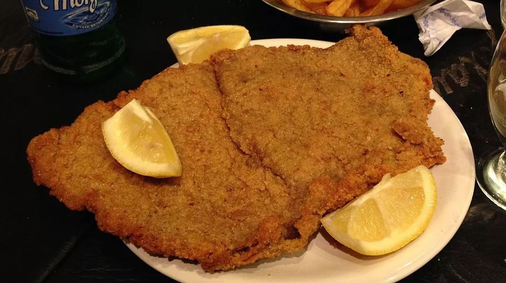

Argentine Milanesa

Description
This milanesa recipe is for a quintessential Argentine dish, often considered the country’s unofficial national dish.
Easy to make, all you need is thinly sliced beef or veal, coated in crunchy bread crumbs and then fried until deliciously golden brown.
Ingredients
- 1 lb veal steaks Milanese cut or thinly sliced
- 2 eggs
- 3.5 oz breadcrumbs
- 1 ½ cups Canola oil for frying, can substitute with corn or sunflower oil, about 35cl
- 1 bunch parsley
- 2 cloves garlic
- Salt and pepper to taste
Instructions
- Chop up parsley as finely as possible. Then peel the garlic and crush them in a mortar.
- Arrange milanesa steaks on a board and season with half the parsley, crushed garlic, pepper, and salt. Rub them well.
- If you have time and for the best flavors, let the milanesa steaks rest for an hour in the fridge.
- Crack open the eggs into a mixing bowl and add the rest of the parsley, a pinch of salt.
- Beat egg mixture well using a fork until everything is well integrated.
- Dip the milanesa steaks into the egg beaten mixture.
- Arrange the bread crumbs on a flat plate. Take the first piece of milanesa steak and place it on the plate. Flip so both sides are covered in breadcrumbs. Repeat this process for all pieces of meat.
- Heat a skillet with vegetable oil at medium-high heat. Wait at least three minutes for the oil to be very hot.
- Fry the steaks on both sides for about three minutes, until they are golden brown.
- After each steak is cooked, remove from the skillet, and drain on sheets of absorbent paper towels for about five minutes.
- Serve with fries and small green salad for a tasty Argentine feast.
Home